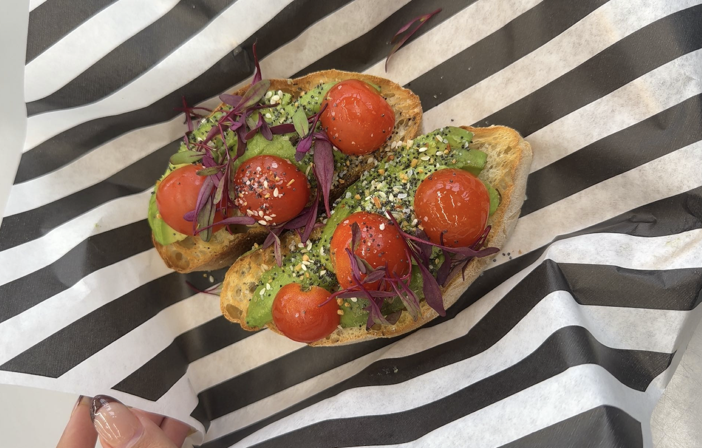

Brunch Spots Near USF
Cozy cafés, coffee dates, and slow mornings curated by a USF student.
Brunching by USF
Honestly, one of my favorite things about being a student at USF is exploring brunch spots around the city. Whether it’s grabbing coffee before class or going out with friends on the weekend, brunch has kind of become part of my routine here.
Living near campus means there are so many places within walking distance, but it can also get overwhelming trying to figure out which ones are actually worth it. Some places look cute but aren’t that good, and others are amazing but hard to find unless someone tells you.
That’s why I made this blog to share a few of my go-to brunch spots near USF that I actually enjoy. These are places I’d recommend to friends, whether you’re looking for a chill study spot, a quick bite, or a proper weekend brunch.